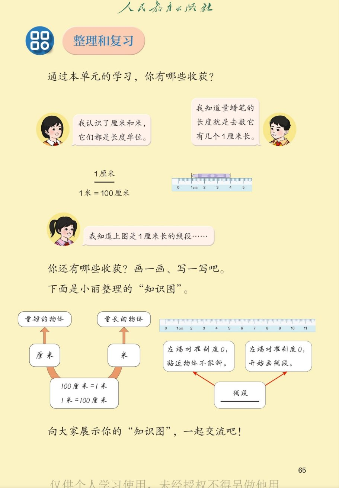

🔊 四、厘米和米 · 课本第 65 页 · 整理和复习（知识图）
人教版《数学》二年级上册 · 有声图文带读 · 先想后看解析 · 单元收获 · 厘米与米 · 知识图
环节
4
认知
2
强化
3
拓展
1
本页重点
长度单位 · 1米=100厘米 · 线段的量与画 · 知识图
🎧 分两步学：
① 解析教材图片
——纯声音读图，读到哪一块哪一块闪动提示；关键处先倒计时让你思考，再在图片下方给出解析并朗读。
② 分层提问练习
——六道分层题（认知 / 强化 / 拓展），先思考再展开解析、朗读参考答案；这一步不再回到图片。
也可以随时点任意一句话、图上任意一块单独听；点课本文字卡还会展开答案。
教材图片（点块听读，读到哪块哪块闪）

📖 人教版《数学》二年级上册 · 课本第 65 页 · 图片仅供个人学习，版权归人民教育出版社所有
🤔 想一想（点我可跳过）
课本的文字（点句子：听读 + 看答案）
收获一
我认识了厘米和米
看答案 ▾
厘米和米都是
长度单位
；
厘米
量短的：铅笔、橡皮、课本；
米
量长的：黑板、教室、操场；
💡 量短的用厘米，量长的用米
收获二
量长度就是数 1 厘米
看答案 ▾
把
1 厘米
当作小标准；
量蜡笔就是数它包含
几个 1 厘米
；
有几个 1 厘米，就是
几厘米
；
尺子上每个大格都是 1 厘米。
收获三
1 米 = 100 厘米
看答案 ▾
1 米 = 100 厘米
，反过来 100 厘米 = 1 米；
米大、厘米小，相差
100 倍
；
💡 米和厘米进率是 100
知识图
小丽整理的"知识图"
看答案 ▾
左支
：量短的物体→厘米，量长的物体→米；
中支
：100 厘米 = 1 米，1 米 = 100 厘米；
右支
：线段——量：左端对准刻度 0，贴近物体
不能斜
；
画：左端对准刻度 0，画到要的厘米数。
分层提问练习（先想后看解析）
📏
认知
厘米和米是什么单位？各适合量什么？
看解析
🤔 想一想
解析：
都是
长度单位
；
厘米量
短
的，米量
长
的。
💯
认知
1 米等于多少厘米？
看解析
🤔 想一想
解析：
1 米 =
100 厘米
；
100 厘米 = 1 米，进率是 100。
✏️
强化
"量蜡笔就是数它有几个 1 厘米长"，是什么意思？
看解析
🤔 想一想
解析：
把
1 厘米
当作标准去数；
数出几个 1 厘米，就是
几厘米
。
💡 测量的本质：用单位去数
📐
强化
量线段和画线段，各要注意什么？
看解析
🤔 想一想
解析：
共同点：左端
对准刻度 0
；
量：贴近不能斜；画：从 0 画到要的厘米数。
🗂️
强化
知识图上，厘米和米各适合量什么？举个例子。
看解析
🤔 想一想
解析：
厘米：铅笔、橡皮、数学书；
米：黑板、课桌高、教室长。
🌈
拓展
你会怎样画自己的"知识图"？
看解析
🤔 想一想
解析：
中心写"长度单位"，分支写厘米、米；
再分支：1 厘米多长、1 米多长、1 米=100 厘米、线段量画法。
🌈 画一画，知识就连成片
① 解析教材图片
② 分层提问练习
⏹ 停止
纯声音 + 高亮跟随 · 想好才出解析
← 返回导航